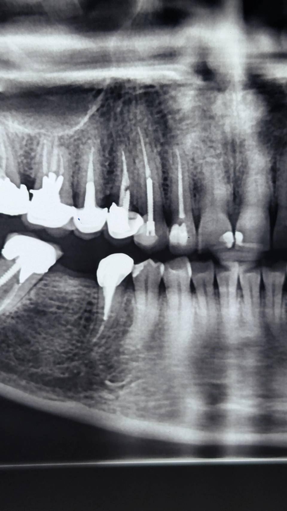
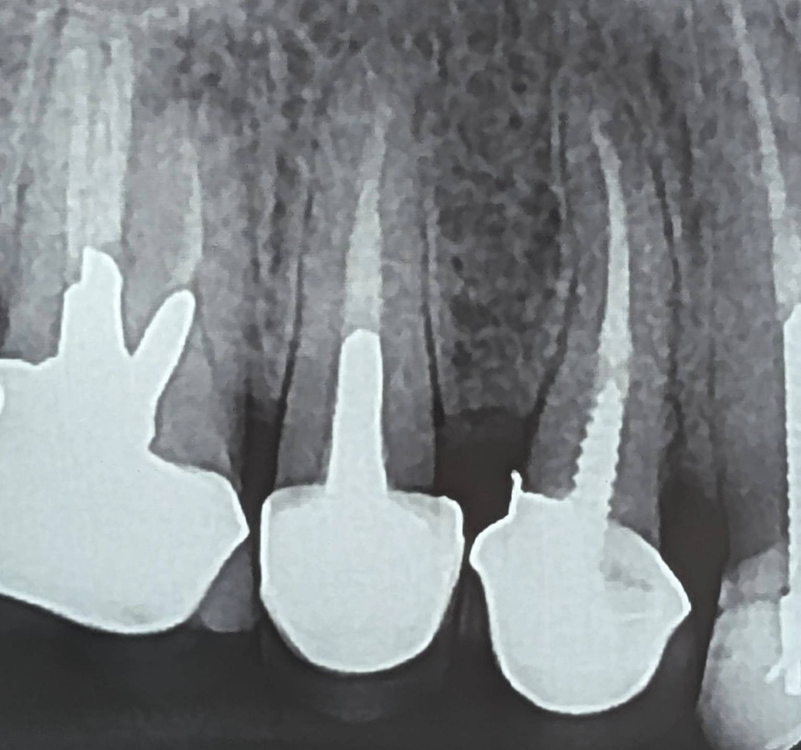

Chairside 13
از تصویر تا واقعیت؛ وقتی زمان، دادهٔ تشخیصی تولید میکند

-
بیمار پس از دریافت چند نظر درمانی، برای تصمیمگیری نهایی در مورد دندان ۴ بالا سمت راست مراجعه کرده بود.
بر اساس رادیوگرافی پانورامیک، به او پیشنهاد کشیدن دندان و جایگزینی با ایمپلنت داده شده بود.
علت تمایل بیمار به تعویض روکش، نقص ظاهری آن بهدلیل چیپینگ پرسلن و نمای فلزی بود.
-
در ارزیابی اولیه، محدودیتهای پانورامیک در تشخیص جزئیات ساختاری مدنظر قرار گرفت
و رادیوگرافی پریاپیکال از ناحیه تهیه شد.

-
در PA،
نشانهای از پوسیدگی ثانویه گسترده، ضایعه اپیکالی یا تخریب غیرمعمول ساختار ریشه مشاهده نشد.
-
با این حال، ارزیابی قطعی وضعیت دیوارهها، میزان فرول و کیفیت کور،
تا زمان برداشت روکش امکانپذیر نیست.
-
نکته کلیدی این کیس، نه صرفاً در رادیوگرافی، بلکه در عملکرد واقعی دندان در طول زمان است.
-
این روکش، بهعنوان یک واحد پروتزی، حدود ۱۵ سال در دهان باقی مانده و همچنان در فانکشن شرکت دارد.
این یعنی مجموعهای از تمام عوامل شناختهشده و ناشناخته—از کیفیت درمان اولیه و طراحی پروتز گرفته تا شرایط اکلوژن، عادات بیمار و پاسخ بیولوژیک—
در نهایت به یک خروجی مشخص منجر شدهاند: بقای عملکردی دندان.
-
بهعبارتی،
ما با سیستمی مواجهیم که ۱۵ سال تحت بار واقعی تست شده و «fail» نشده است.
-
این داده، جایگزین ارزیابی مستقیم نیست،
اما یک real-world clinical evidence محسوب میشود که میتواند در ذهن کلینیسین،
پروگنوز نگهداری دندان را بهطور معناداری بهبود دهد.
-
این کیس یادآوری میکند:
تفاوت میان پانورامیک و پریاپیکال، فقط در وضوح تصویر نیست—
بلکه در سطح تصمیمسازی است.
و فراتر از هر دو،
گاهی مهمترین داده، چیزی است که در هیچ تصویری ثبت نمیشود:
زمان.
محتوای این صفحه برای استفادهٔ آموزشی دندانپزشکان و دانشجویان دندانپزشکی تهیه شده است.